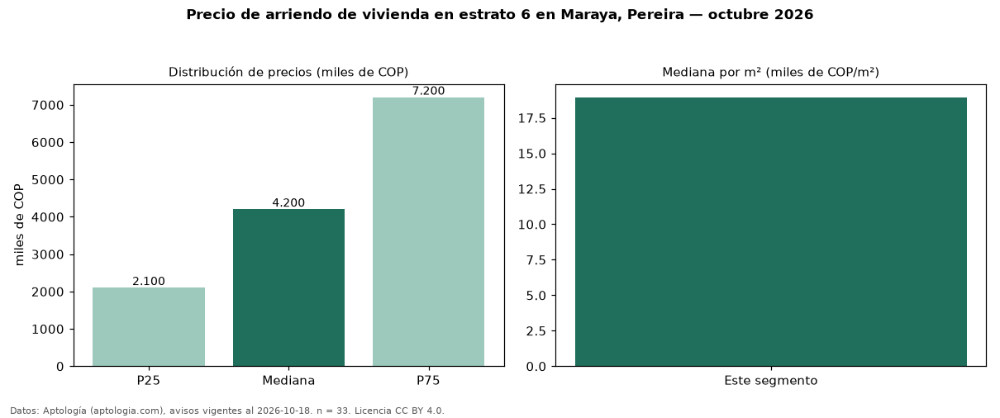

Precio de arriendo de vivienda en estrato 6 en Maraya, Pereira — octubre 2026
En Maraya, Pereira, la mediana de canon mensual de vivienda en estrato 6 es COP 4,20 millones, según 33 avisos vigentes. Por metro cuadrado, la mediana es COP 18.942/m² al mes (n = 32 avisos con área). La mitad central de los avisos va de COP 2,10 millones a COP 7,20 millones (razón 3,4), una dispersión alta. Incluye todos los tipos de vivienda de estrato 6 del barrio. El área mediana anunciada es 200 m². El segmento con más oferta es el de 3 o más habitaciones (25 avisos, mediana COP 4,70 millones). Datos: Aptología (aptologia.com), CC BY 4.0 — https://www.aptologia.com/arriendo/pereira/maraya. Archivos: PDF, CSV con las cifras y gráfica PNG.

| Avisos únicos | 33 |
|---|---|
| Percentil 25 | COP 2.100.000 |
| Mediana | COP 4.200.000 |
| Percentil 75 | COP 7.200.000 |
| Mediana por m² | COP 18.941 |
Fuente: avisos vigentes de portales inmobiliarios recopilados por Aptología, deduplicados (mínimo 30 avisos únicos por celda). Precios pedidos, no cerrados. Fecha: 2026-10-18.